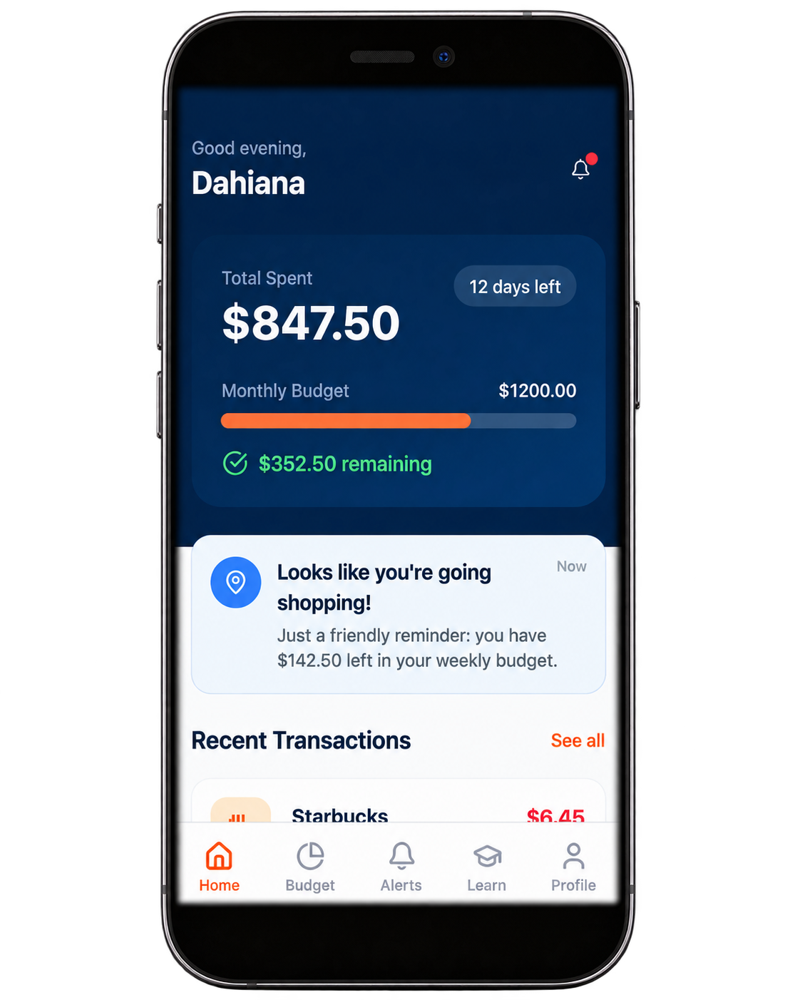

Hi, I’m Jacqueline
I turn human behavior into clearer product decisions and more intuitive experiences.
I’m interested in the intersection of psychology, engineering, and design—understanding how people think and using those insights to make products and experiences work better.
Contact MeSelected work